Laser cutter settings
There are three settings which can be manipulated to affect the depth and the appearance of the cut or raster: power, speed and frequency. Power is related to the strength of the laser. The more you increase the power settings the more heat will
be applied while cutting. Speed is how quickly the laser will go over the pattern. The slower the speed, the longer the laser will remain still. The longer it remains in one spot, that is, the slower the speed, the deeper it will engrave or the
more likely it will cut through the piece
When in use, the laser emits a set of pulses. Think of it like a printer. It does not print a continuous stream of ink. It actually prints thousands dots per inch. When rastering, the more dots per inch, or the higher the frequency, the
darker the area will be. When cutting, adjusting the frequency is similar to adjusting the power. The more pulse per inch, the hotter the material will be. Higher frequency will give a smoother edge.
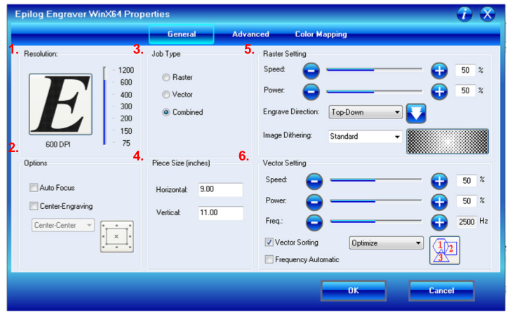
- Resolution: This settings changes how many many the laser will fire and “mark” the material. The higher the dpi, the crisper the image will be, however this will increase the cut time. Resolution is only important when rastering as it is not used when vectoring. If you are doing a vector only cut, leave the dpi at a mid-range value.
- Options: There are two settings available:
- Auto focus: Make sure this setting is turned off. We we do not use this attachment at the makerspace.
- Center-engraving: This changes how the laser treats the home. For more information on what “homing” means, see step 5: “Preparing laser cutter”. If this is not selected, the laser will default to start at the top left hand side of the page. When selected there are three options:
- Top center
- Left center
- Center center
- Page center
- Job type: You can limit the laser cutter to either do a raster, vector, or combination of the two
- Piece size: There are two ways of using the piece size. You can either adjust it to the the size of the laser cutter or to the size of the page that you are going to be printing. If you make the piece size smaller than your original it will cut off part of the image.
-
Raster settings: This is where you adjust the laser’s speed and power so that you get the desired look on the specific material.
You can also choose whether the laser begins rastering from the bottom and works its way upward, or the starts from the top and moves downward.
Speed: Determines how fast the laser will travel while raster. A lower percentage means a slower speed will create a darker and/or deeper image.
Power: Determines how much power is provided. A higher percentage means more power which will create a darker and/or deeper cut.
Image dithering changes how the laser cutter interprets the image and converts it into dots. There are 6 different options which can be sorted into two categories either Clipart Modes or Photograph Modes
-
Clipart Mode:Typically used for anything that has been created in a drawing or 2D design software.
-
Standard mode is the default mode and is gives a structured pattern to the dot patterns being rastered.
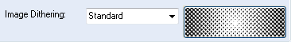 -
Brighten: Used to lighten an image by decreasing the number of dots and giving preference to lighter tones. Most useful when working with wood like products.
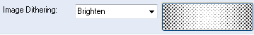 -
Low Res decrease the number of dots in the rastering pattern and lowers the sharpness of the image

-
Standard mode is the default mode and is gives a structured pattern to the dot patterns being rastered.
-
Photograph Modes: Designed to randomize the dot pattern which can make the image look more attractive. They can also be used to create special effects on clipart style images.
-
Floyd-Steinberg: Produces an almost wave-like pattern to an image. This works well for some photos containing a great deal of detail. Photos with more monotone swatches of color may not be as pleasing as Jarvis or Stucki modes
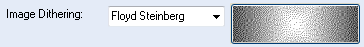 -
Jarvis – Many users find this mode good for engraving photographs at 300 DPI. This mode produces a very nice looking pattern on almost all photos.
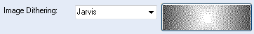 -
Stucki - This mode produces results that are only marginally different than the Jarvis dithering pattern. It is also very good for engraving photographs at 300 DPI. The differences between Jarvis and Stucki are very subtle.
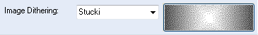
-
Floyd-Steinberg: Produces an almost wave-like pattern to an image. This works well for some photos containing a great deal of detail. Photos with more monotone swatches of color may not be as pleasing as Jarvis or Stucki modes
-
Clipart Mode:Typically used for anything that has been created in a drawing or 2D design software.
-
Vector Settings:This sections allows to to adjusts the settings to ensure that your vector penetrates as deeply as desired.
Speed: Determines how fast the laser will travel along the vector lines. A lower percentage means a slower speed will create a deeper cut.
Power: Determines how much power is provided. A higher percentage means more power which will create a deeper cut.
Frequency: Determines the number of pulse of the laser per inch it travels in vector mode. A higher frequency means there is more heat being applied. When cutting with wood or cardboard, a lower frequency is prefered. As opposed to higher frequency which is useful for materials like acrylic where a clean edge is prefered. If automatic frequency is selected the pulse is set to 5000 pulses per inch.
Vector sorting: This decides the order by which the laser cutter performs the vector cuts. There are two options available- Optimize: Laser will determine the most efficient pattern to cut. This is usually the most time efficient way to cut.
- Inside out: Laser will start with the innermost vectors and work its way outward.
Let’s use the following picture to illustrate how each of these functions works. The red circle is where the laser cutter head has been homed. The second image shows the position of the laser head in the laser cutter.
| Laser home relative to the image | Final product | |
|---|---|---|
| Option not selected | 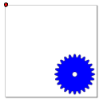 | 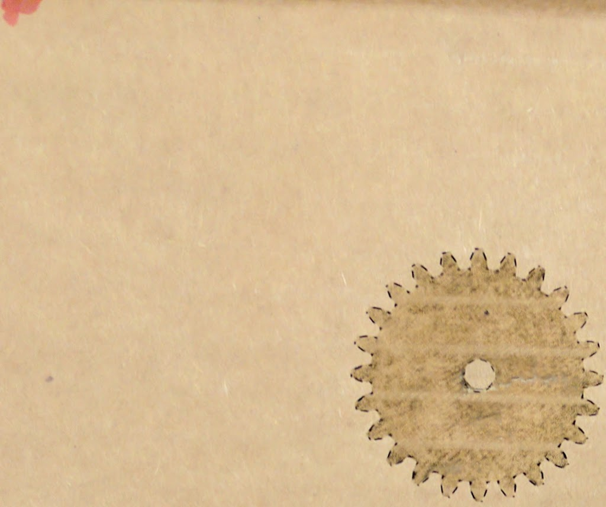 |
| Top center | 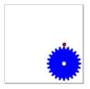 | 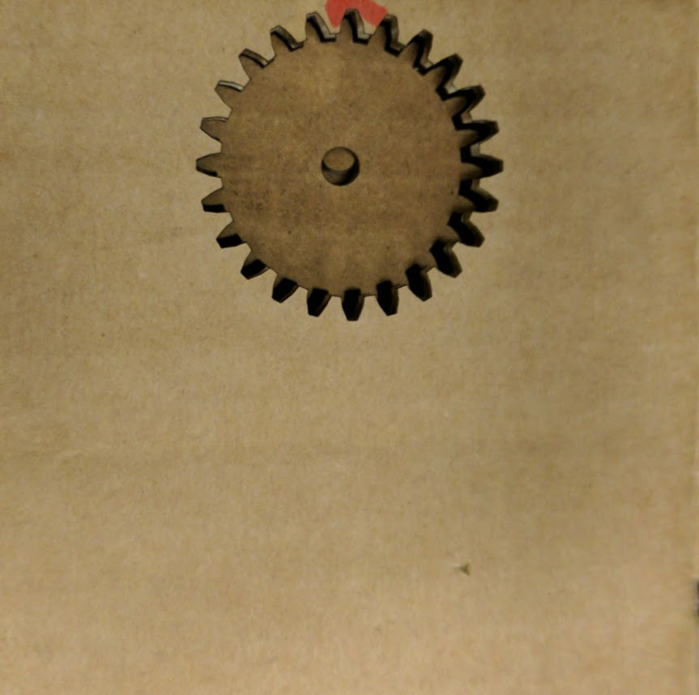 |
| Left Center | 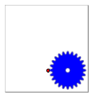 | 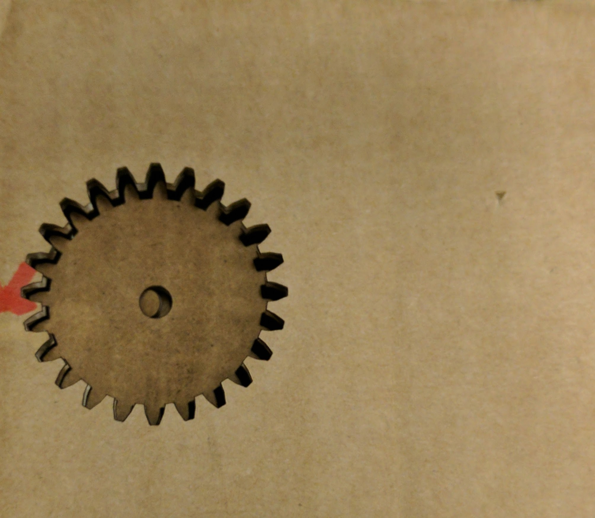 |
| Center Center | 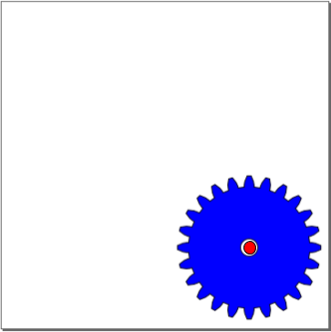 | 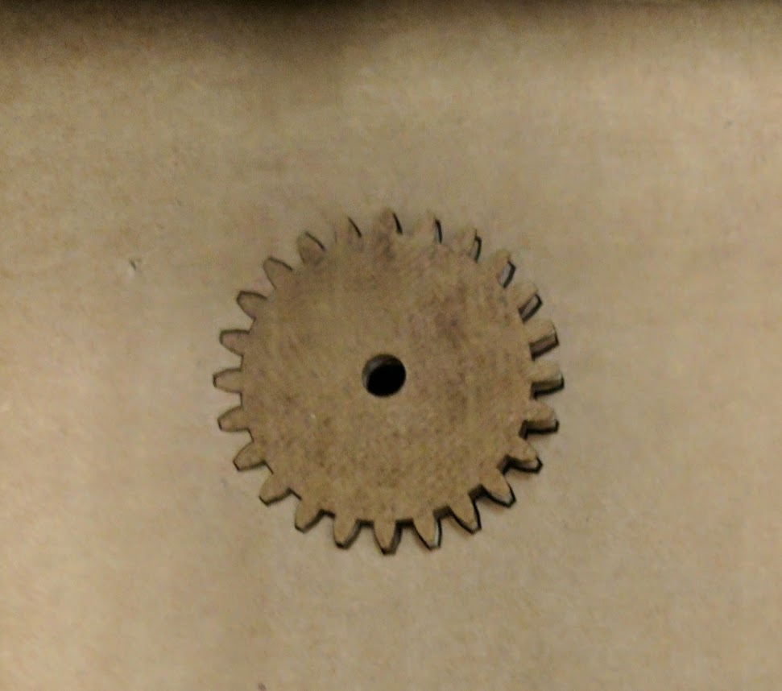 |
| Page Center | 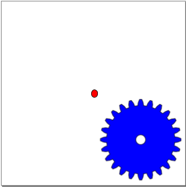 | 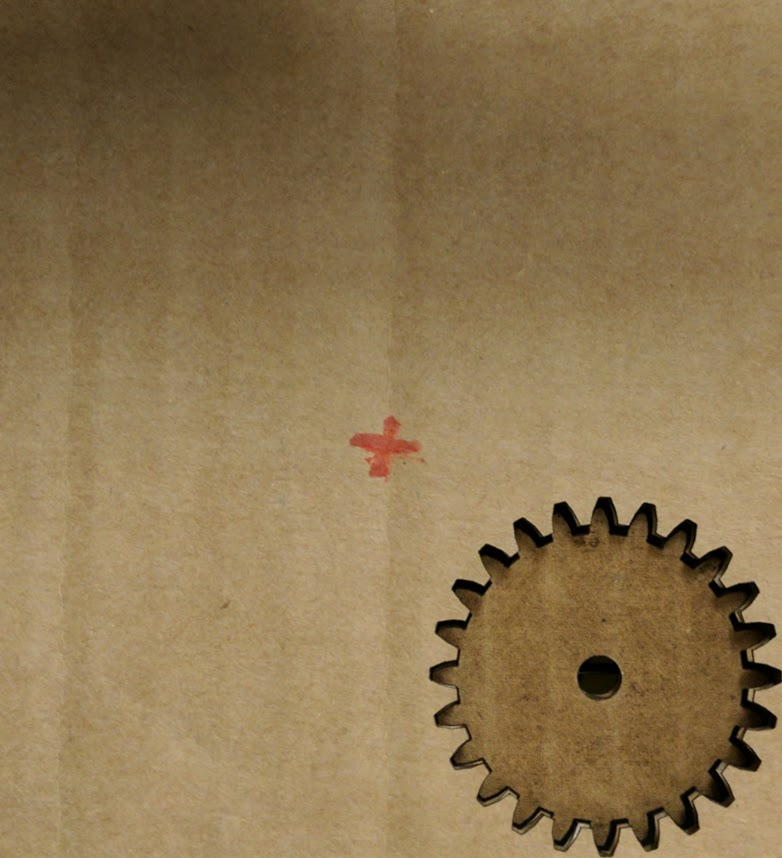 |